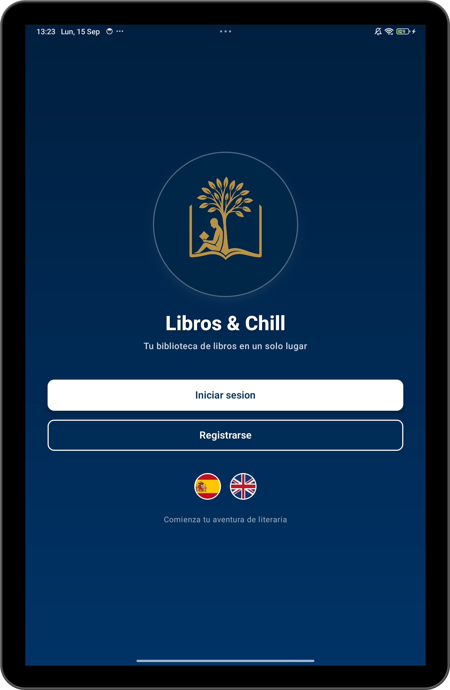
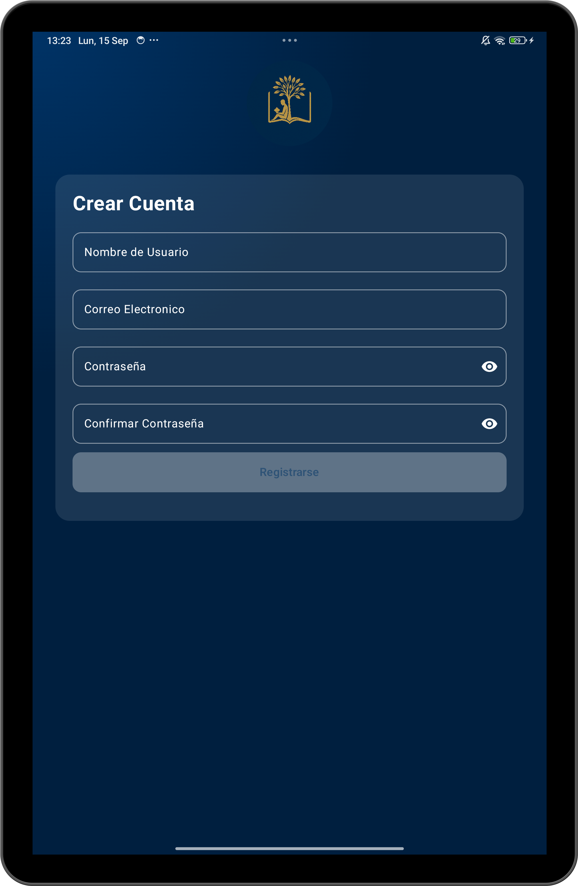
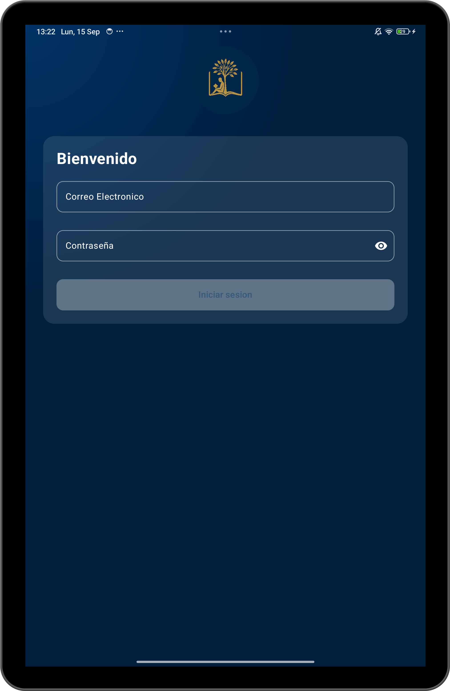

✨ Características principales
- 📚 Gestión de libros (favoritos, leídos y pendientes).
- 📝 Añadir comentarios y ver los de otros usuarios.
- 🔎 Búsqueda por título o autor.
- ☁️ Sincronización en la nube.
- 🎨 Interfaz intuitiva basada en Material Design.
⚙️ Tecnologías utilizadas
- Kotlin – Lenguaje de desarrollo Android.
- Firebase – Autenticación y sincronización.
- Material Design – Diseño visual y UX.
- Google Books API – Búsqueda de libros.

Pantalla principal
Muestra la lista de libros guardados, organizados en categorías como leídos, favoritos o pendientes.

Búsqueda
Funcionalidad para buscar libros mediante la API de Google Books e incorporarlos a tu biblioteca personal.

Búsqueda
Funcionalidad para buscar libros mediante la API de Google Books e incorporarlos a tu biblioteca personal.